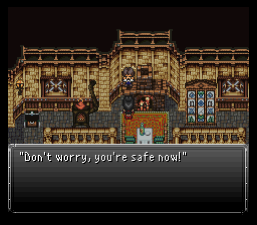
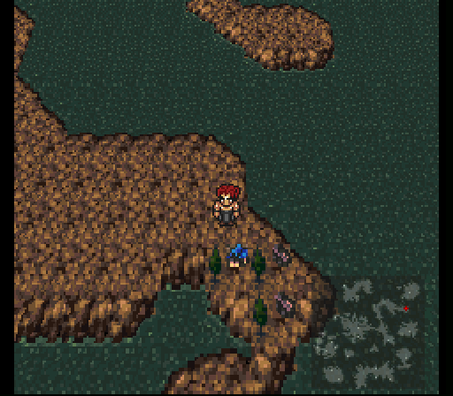
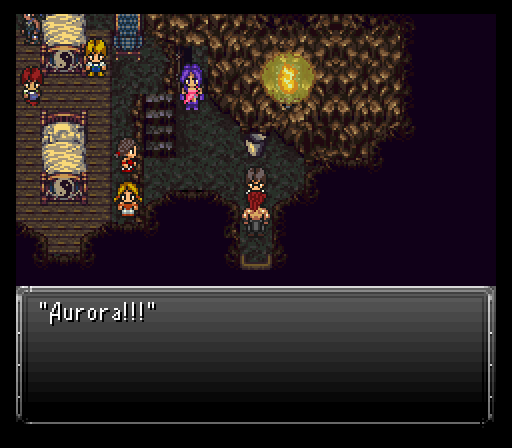
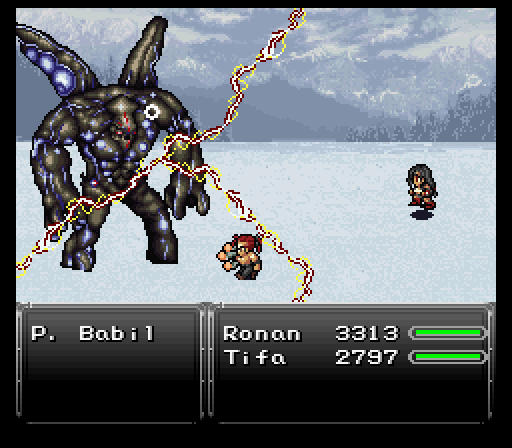
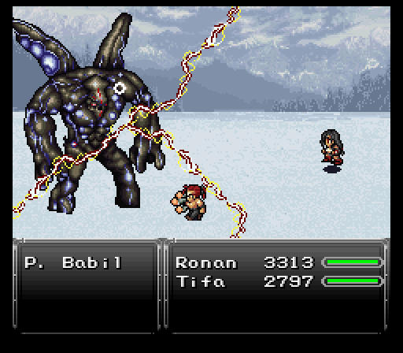
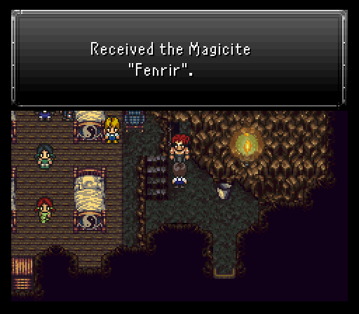

Part 18: A Whole New World
Ruined world:
World's gone to hell folks and Zuriel's LOVING it. He's going as far as to absorb energy from the statues on a regular basis.
Despite all this, there's a couple survivors on a lone island...Professor Oak & Tifa. The rest of the survivors couldn't take it anymore and offed themselves by jumping off a nearby cliff.
Tifa's been knocked out cold for a full year and Oak's been watching over her. It's come with a price...Oak getting sick. He needs a healthy dose of fish. Lots of it actually. As such, Tifa's going to be running from the house to the ocean shore collecting only the speediest fishies. Anything less likely hastens Oak's death. If only the slowest ones appear, or worse none at all, you can reset them by going back and talking to Oak.

After a good 5 minutes or so, Oak has been fed enough fish to become healthy again. The goal is clear...there's no way they're the only survivors left in the whole world. Tifa is going to take a raft to the nearest continent and begin her search to find all of her friends, then find a way to reach Zuriel and kick his ass once and for all.
Note: If you decide to venture outside instead of saving Oak for whatever reason, be sure to equip Tifa before getting into a battle. On this island you can encounter monsters such as Yoalks, Facehuggers, along with a couple new ones that we will encounter more of later on:
- Bone Pillar - These undead guys' special attack inflicts Zombie.
- Fairy Dragon - Becomes invisible after being attacked. Can use Sand Storm.
Searching for friends:
Tifa begins her quest to locate her friends, but it won't be easy. First and foremost make sure to equip Tifa before taking a step. Battles may seem innocent enough, but remember that Tifa will be eating 2-3 attacks every turn and she'll likely need 2 or 3 Blizzards to drop non-ice weak targets. Use your best judgement and bail out with Teleport if you think it'll be too rough for her to handle.
Most of the monsters just do straight damage, but Scavengers are dangerous mainly due to Soulshatter. Keep a Holy Amulet on at all times or Teleport out instantly if any show up. A few monsters are also susceptible to Petrify, but since Tifa nor Ronan possess any means of petrifying, we are SOL there I'm afraid.
The World of Ruin has a fairly linear path of progression to start with. You're going to have to make it to Kaldor Trade City to advance the story, but there's a couple detours you can make. One of them is the town of Alvantes which is just a small walk to the northeast from where Tifa came ashore.

There's a few very interesting things in town. One NPC mentions a strong muscular man that headed for Ravaryn to the northwest. Very likely that's Ronan which would be a huge boon for Tifa.
Also, there's a couple interesting NPCs you've likely seen a few times throughout your adventure, Jake & Finn. It seems their buddy BMO has gone missing and wonder if he's still around. We'll have to see if we run across him in our journey.
Finally, there's an old man at the pub who wants to drink all of his worries away. You'll get presented with three options. Take the last option where you tell him drinking won't help one damn bit and he'll hand over a nice relic, the Mermaid Tear. Bestows divine favors which I believe is one or two auto buffs (not sure which ones precisely though), has resistance to ice, nulls fire, absorbs water, and makes the wearer weak to lightning (but a Rubber Shield can reverse that).

When you're ready to rock, exit Alvantes and look at your map. There's a dot far far away to the northwest on the large continent you start on. That's Ravaryn so get walking (and listen to the rockin' new battle theme and victory theme on the way).
There are of course a whole slew of new possible monsters to encounter on this continent, including the raised Serpent Trench. They are as follows:
- Armadon - Has a strong physical special attack called Pulverizer. Uses Ice spells but is also weak to Ice. Susceptible to Petrify.
- Berserker - Both strong and agressive physically and can use Rock Slide. Susceptible to Death.
- Bleeder - A rare encounter. We fought one much earlier, here they come in a 4-pack.
- Cactoid - Not very dangerous, other than a possible 1000 Needles on their third turn. They have a substantial amount of hp.
- Cinderpede - Unsurprisingly uses fire spells. Special attack inflicts Berserk.
- Djinn - Rare encounter. They like to drain mana, have a lot of hp and use lightning spells. If only one is left will use strong wind spells.
- Green Slime - Very weak, but uses curative and protection spells on monsters when attacked physically.
- Guardhound - Your basic dog-monster of the WoR. Their special attack inflicts Blind.
- Hellhound - Fire-based dog-monster from the depths of Hell.
- Keaton - Fast, can attack twice. If hit with magic can use Sun Bath and possibly Expel.
- Parasite - Weak, but has a substantial amount of hp. Uses Lifeshaver if last monster alive.
- Pegupaura - Uses Flayer, a semi-strong physical special attack. Weak to Lightning.
- Kabutops - Everyone's favorite Fossil Pokémon! Uses its special X-Scissor frequently, and if hit by magic can counter with Black Shock or Razor Leaf.
- Jelly - Weak but annoying thanks to using Transfusion, which cures and heals others at the expense of itself. The are immune to all elements except for Ice, and Water which they are weak to.
- Scavenger - Large, ugly-looking bird of prey. They can use Fossilizer which inflicts Petrify, and also Soulshatter. If that wasn't enough, they can counter magic with Aero. Prioritize killing them first. Weak to Ice.
- Sleepysaur - These were encounterable outside Lunaris in the WoB - we went over them in part 15.
- Spookly - we also encountered these in the WoB.
- Trent - Rare encounter. They have a lot of hp, and hit hard like a tree would. They can also use Charm right off the bat. Thankfully they can be killed instantly with Petrify.
- Undying - Comes with Reraise status.
- Undead Ent - Fought them all the way back in the Dreadwood Forest. They are obviously no match for us now.
- Vanguard - Fought two of them at the Sealed Gate with Kefka. They still have Giga Volt, and it still hurts a lot.
- Wendigo - Physically mid-strong, ice elemental monster.

When you enter Ravaryn, make sure your relics are sorted out. A Holy Amulet & Talisman will be great for what Tifa has to do next cause some intense rumbling occurs after taking a few steps into town. The source comes from a home to the west of the relic shop that's about to collapse, but luckily Ronan's here to save the day and keep the house from collapsing. Tifa is going to have to go in solo to the house though and rescue a child, then escape.

You'll have six minutes for this task. Teleport out of every battle you get into because you don't have time for dawdling around. The Holy Amulet is there since Steelpions can petrify and love opening combat with Rock Sting to inflict it.
There is treasure around and it's all worth collecting. Some gil and a bunch of good consumables, but there's two chests that have a group of four Banished inside. If Tifa has Blizzard, she can nuke them all with two multi targeted castings. You don't get anything besides the exp & gil though so only open the chests (First one by the stairs going down on the first screen and the chest to the east of the child) if you're sure you can destroy them and get out in time.
Once you find the child and escape (I had 2 1/2 minutes left on escape...and that was with opening both monster trapped chests too), the goal is clear...take Ronan, go find the rest of the crew while punching the crap out of anything in the duo's way. Works for me! Just be sure to equip Ronan firstly.
Anney's plight:
Time to make the long walk to Kaldor Trade City. North of Alvantes just so happens to be Zuriel's Fortress, but you'll need some aerial form of transportation to get inside.
Just east of Zuriel's Fortress in the large forest is a hidden Chocobo Ranch, which will make traveling much faster and safer. I, however, will continue hoofing it to gain experience, now that we are more than one party member. Further east of this is the Zolom Trench. Once an underwater vista of life, it has now dried up and become nothing more than extra land you can walk on.

Eventually, you'll have a choice to go north or south once you reach the trench. To the immediate south is Kaldor Trade City, but I'm going to take a long detour north. Lots of battles, but luckily Tifa & Ronan can handle the majority of them so long as one focuses on pure offense while the other supports with heals or the occasional spell/skill.
Eventually, the detour leads to two things...a hidden Chocobo Ranch in a huge forest, meaning a much less battle ridden journey back towards Kaldor Trade City, and a ruined town to the east of that ranch, Ruta Village.
Ruta Village has basically gotten all but completely wiped off the map. There's only a few buildings left and there appears to be snow everywhere. Hell, there's several tombstones to the south. Some have items, but one apparently claims Link got destroyed. Maybe, but he's probably in the light world and finding a way to get back to this world.
Anyways, there's a couple guard hounds to greet the duo at the entrance with a kid coming out of a house. If you go into that house (the one with the mailman from long ago), there's a cave down in the basement where the survivors are. As it turns out, the majority of the survivors are kids with one important exception...Aurora's alive and well.
For our magic slinging sorceress, there's a big problem....with the children's parents killed when Zuriel decided to laser the hell out of Ruta Village, she feels that she needs to stay here and protect the kids while trying to sort her newfound feelings out. Soulless when we first met her, but now she might be feeling what one could very well describe as "love" like a mother protecting her kin.
When you're done chatting with Aurora, exit the cave. Right after that, a rumbling occurs...and it's not Zuriel's giant laser of doom again. It is one of the ancient demons released when the world got earth shattering kaboom'd, Proto Babil. Aurora rushes out to confront it, but only succeeds in getting another point in the "getting one's own ass kicked in a cutscene or battle" column.
 

Thankfully, Tifa & Ronan have been slow to get out of town and hear the commotion and rush to her aid. Proto Babil isn't too vicious, mainly just Magitek Laser, Atomic Ray and Aerods, but be aware that its Shrapnel Blades can hit close to 2000 damage if it gets focused on a single target. Proto's special attack, Stomp-o-rama, does extra physical damage.
Proto is weak to lightning, so Thunder Fist Combo for Ronan, and for Tifa equip any Volt Knuckles along with a Monk's Belt. You should also either enter the battle with Float, or have Tifa summon Sylph to block Proto's Magnitude Eight.
After the hulking beast takes enough damage, it runs and Aurora finds herself resting up in bed. Clearly these feelings she's never really experienced before are interfering with her fighting potential and she needs some time to sort them all out. A shame, but at the very least we know that she's alive (assuming Proto Babil doesn't return while we're away).
So, why bother coming up to Ruta Village for what basically amounts to a few random items and finding an ally that needs to do some soul searching? One of the kids hands over a magicite that Proto Babil dropped, Fenrir.
Fenrir teaches a spell not available to anyone before, Vortex. That's fine and all, but summoning the esper in battle grants everyone the image status. This buff makes all normal attacks and most special physical attacks fail to connect until the buff breaks (which can occur after said above mentioned attacks are used).
The downside? Outside of equipping a certain Relic for Eiko, she will never be able to equip this esper. A shame, but she'd be SO busted if she could. So we will put it on Tifa since she can use it.
Next thing to do, rent a Chocobo and ride all the way back down the Serpent Trench, south, to Kaldor Trade City.